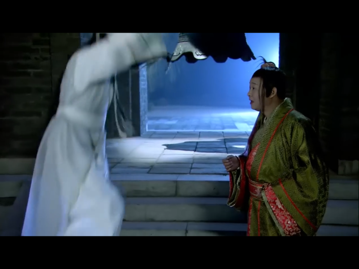
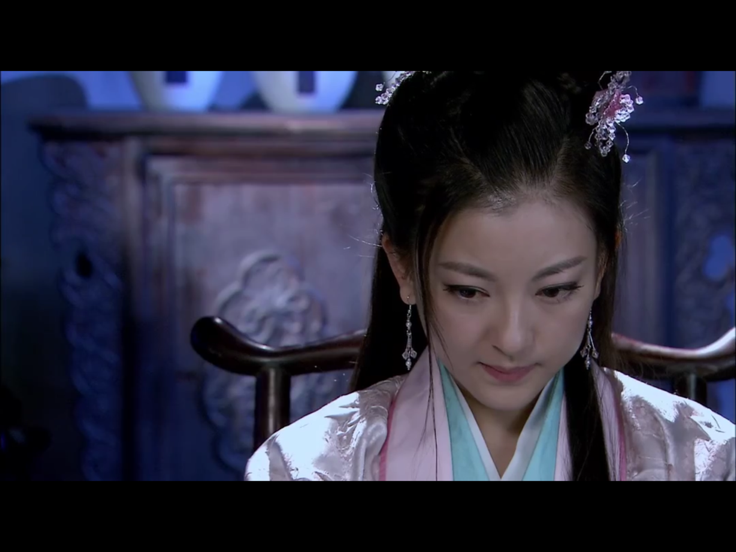
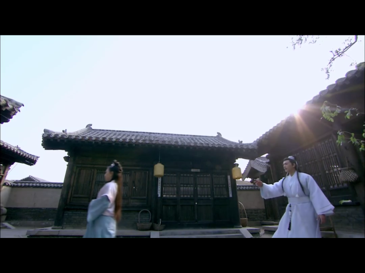
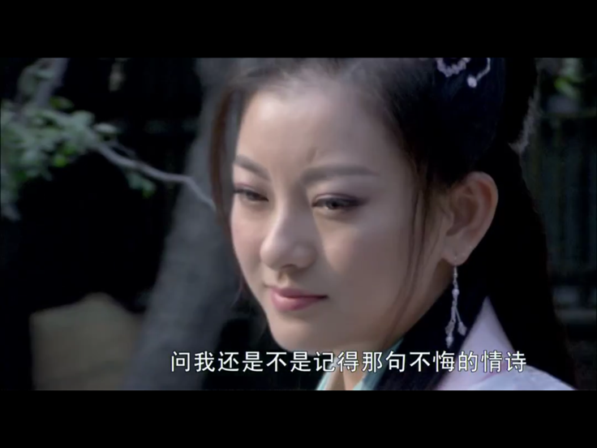
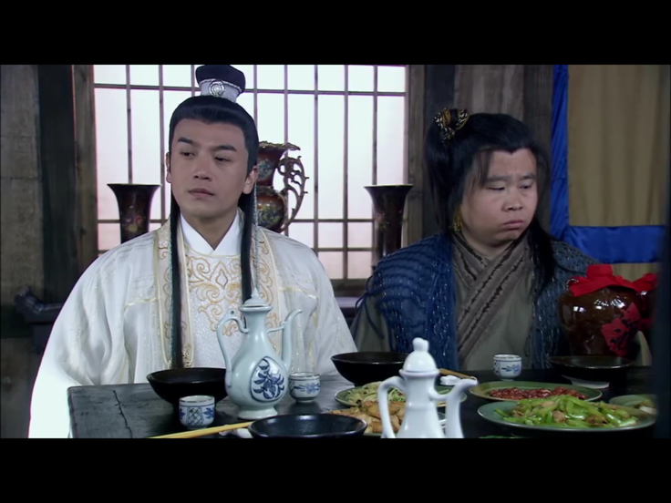

typora直接出的html文字缩进好像有问题。。不过算了 我实在是懒得搞了
ep1
 因为掉入张智尧版花满楼的坑来吸他
别的都挺好 唯一的问题是我现在看胡铁花像手工耿 感觉他马上要说保定话了
因为掉入张智尧版花满楼的坑来吸他
别的都挺好 唯一的问题是我现在看胡铁花像手工耿 感觉他马上要说保定话了
我实在是不记得图片分别是哪集的，当时一共存了七八十张……挑了挑随便塞进来吧
ep7
tmd这妹子剧情太适合出本子了吧
和楚留香德骨 又精神穿越 这俩大妈看到楚留香正脸对小白脸容貌直白的赞叹真是让我有照镜子的感觉然后刚被说完“当楚留香的儿子都小”就被叫“大叔” 他还不乐意了站那跟人理论起来
真是可爱
这俩大妈看到楚留香正脸对小白脸容貌直白的赞叹真是让我有照镜子的感觉然后刚被说完“当楚留香的儿子都小”就被叫“大叔” 他还不乐意了站那跟人理论起来
真是可爱


ep8
哈哈哈哈哈舔狗变脸wwww 香帅真是有面子哦
ep10
他对女人真的太好了 谁受得了 他对石秀云那两句“别哭了，别哭了”
呜哇 温柔到天上去 又有分寸
我碰到绝对即时沦陷
他对石秀云那两句“别哭了，别哭了”
呜哇 温柔到天上去 又有分寸
我碰到绝对即时沦陷
ep11
哎呀我操 拜托了 请来欺骗我的感情 “你怎么可以这么说呢” “我本来想约你今晚在这里见面，我还没有说完，你就对我乱发脾气了” “我怎么会和你一样，乱发小孩子脾气。” “那你就是大人了，大人就要有大人的样子。” “你的脚还疼吗，我抱你回去好不好？” 草泥马，击杀我，坟头就坟头吧，和这种男人坟头约会也不亏的
ep12
石秀云这个妹子塑造的非常讨我喜欢
矜持又娇羞，又含蓄又春心萌动的少女感，虽然有点点自卑但完全不会为了楚留香自轻自贱，对喜欢的表达也恰到好处
想到她以后要为香帅离开郁郁寡欢就觉得这男人真是可恶哦
ep13
这老太太够损的。。钱也不还人家妹子也扣着。。我呸
丐帮的消息也太慢了，薛衣人都找我脸上了你们才跟我说
//
一开打还是给怪拉出来了 地利也无了
打戏挺行的
但我还是老伯形象先入为主 觉得打不过
ep14
挺多槽点的
那个年代说我提取指纹 有人信吗 有那个技术吗。。
薛笑人：你不用报官了，来取我性命吧
？这玩意还能私了呢
还有薛衣人竟然靠接私活赚外快养活一大家子死要面子活受罪
然后明珠我一直以为肯定是喜欢楚留香的结果不是竟然喜欢薛二公子我tm
今天的石秀云也可爱可爱
进屋之后贴着香帅站着好乖巧哦w
ep15
你就是奔着里头没人去的，什么不惜开棺验尸
你这看着人家说情话，谁受得了 哎 石秀云真好看 眉目含情
三杯酒下肚：东北都是我的2333
这段喝酒的戏，真的很像我一段经历
也是无疾而终吧先喜欢上了又卑微 真的就是这样的 看得很感慨 很心疼 但又觉得他也没做错什么……
男的段位太高了 无敌向下兼容 我就是个仰望大佬的小迷妹
哎 石秀云真好看 眉目含情
三杯酒下肚：东北都是我的2333
这段喝酒的戏，真的很像我一段经历
也是无疾而终吧先喜欢上了又卑微 真的就是这样的 看得很感慨 很心疼 但又觉得他也没做错什么……
男的段位太高了 无敌向下兼容 我就是个仰望大佬的小迷妹 不过我倒是没把鞋都喝丢了 也没故意脱 唉 何必呢 不要喝酒 喝酒误事
我擅自理解 楚留香怕她喝醉是不想借酒跟她牵扯太深 妹子一直问你怕我喝醉 也是反复确认他到底对自己是不是真心
不过我倒是没把鞋都喝丢了 也没故意脱 唉 何必呢 不要喝酒 喝酒误事
我擅自理解 楚留香怕她喝醉是不想借酒跟她牵扯太深 妹子一直问你怕我喝醉 也是反复确认他到底对自己是不是真心 //
卧槽 我看的好难过啊 落泪了
知情知趣 懂事惹人疼 当断则断自尊自爱
没有跟楚留香的确是好事
甚至觉得楚留香有点配不上她虽然我很爱张智尧的脸
但还是好心疼她qwq希望这个妹子以后能够幸福！
//
卧槽 我看的好难过啊 落泪了
知情知趣 懂事惹人疼 当断则断自尊自爱
没有跟楚留香的确是好事
甚至觉得楚留香有点配不上她虽然我很爱张智尧的脸
但还是好心疼她qwq希望这个妹子以后能够幸福！



ep16
卧槽这片场是多冷啊都有哈气了 耳朵都冻红了 来揉揉（x
洗澡！洗澡！洗澡！好文明！好文明！好文明！他好白！他好可爱！
这胡铁花也是个五五开
ep17
啊昨天看完忘记吐槽 看的时候槽点还蛮多的看完太困了就（
后面他俩说一个两个巴拉巴拉七个不可思议的事 就那么站大街上聊找个地儿坐啊 还清净
后边小六烤鱼就算很装逼我还是感觉。。这是老白娘？
【草我看了眼日期这是我两年前写的（2020-11-24 15:35），老白娘这个真给我笑死了（2022年10月10日14:16:44）】
ep18
哈哈哈哈这集开头我就一直在想 明明是海边他们看起来没那么冷了 海看起来好近 是不是棚景啊 结果没过一会儿耳朵就冻红了都是好实景！演员好辛苦！
金姑娘你吱个声啊看得我急死了卧槽啊 怜香惜玉的花花公子 心软的胡相公
怜香惜玉的花花公子 心软的胡相公

ep19
就这种全是对话的场面，书里是怎么写的啊有点在意，这写出来不会无趣吗
你们饭钱结了吗给人店门口狮子都打完了不赔点钱吗
哈哈哈哈这集角色都好可爱 老胡的小表情
甚至还想倒卖张三笑死我了2333


ep20
公孙结余x
这名字也太中二了别名伤残
璃莹殇·安洁莉娜·樱雪羽晗灵·血丽魑·魅·J·Q·安塔利亚·伤梦薰魅·海瑟薇·蔷薇玫瑰泪·羽灵·邪儿
王德志李德彪？？？你们刚才查人数的时候没这俩人啊
ep21
啊，他拉住张三摇头的样子好苏
他仨一直一个屋，两张床……你们不能……至少不可以……
哈哈哈哈这集老胡好好笑wwww
啊这个沟子到底是什么身份！
说起来这部剧一共5部分，开头那四个绑架老胡的女人加什么豹姬那段就7集，借尸还魂十几集，现在都过了一半了第二个故事还在不紧不慢悠哉悠哉的赶路，后面真的讲的完吗
ep22
妈的新衣服好——看————！！！！！！！！！！！
什么叫好看人啊，什么叫衣服架子啊，什么叫要想俏一身孝啊谁能抵挡得了这种男人的魅——力————！！！！芝士！就是！！帕瓦！！！（错乱
不是 这么多人 跟前死了一个 闹哄哄的 张三还去扒拉人家被窝 这都不醒？？？还接着睡？？？？啊？？？？？？ 这个吃饭座位 金灵芝总挨着老胡 再看op 这俩人难道不要高亚男了吗
感觉张智尧使筷子不咋利索呢（x
这个吃饭座位 金灵芝总挨着老胡 再看op 这俩人难道不要高亚男了吗
感觉张智尧使筷子不咋利索呢（x
ep23
可恶 竟然有三位红颜知己 还蓉儿 md 我吃柠檬
凶手是死人这个在少包里看过 但金灵芝买剑法和丁枫是销金窟打手我是没想到
白看腻了想看他穿黑了（
ep24
张三精通航海术 我也略懂一二凡起来了
我都想到里头是炸药了非得开。。另外那时候就有魔法这个词了吗
金姑娘除外这句话有必要说出来吗这是疼女人还是别有用心在这演她呢（
我也觉得白猎好可爱，大小姐看上胡铁花就有点离谱的
古龙嘴臭
ep25
怎么会有这种拔屌无情的感情戏啊
ep26
是多年前江湖上一个很有名的剑客，只是江湖中知道他的人并不多
？？？
“今天晚上，老时候，老地方”
？？？
md怎么会有这么渣的人啊，这高亚男能忍？？？？ 这sb男人还挑nm 肯定选高亚男啊 草了
这sb男人还挑nm 肯定选高亚男啊 草了
ep27
“把我的心也勾了” 吐了
ep28
这段套在网子里的戏镜头怎么回事，是场景不行还是分开拍的，胡铁花和张三怎么都没有同框的，一直切来切去
这东三娘太大了吧
ep29
29:27 薛笑人？！
ep30
死者苏生的戏码多了就没意思了x
ep31
当场ntr笑死我了
刺激刺激 活该活该
金灵芝这感情戏属实是震撼我妈
除了石绣云 别的感情戏也太屎了吧。。。也不是说高亚男跳反了你就没出轨 什么狗屁
ep32
那你为啥不当时就去死 费这二遍事
这个单元的女角色真是令人唏嘘……好看人前面都用完了是吗 金灵芝高亚男的颜是最后的波纹了是吗有俩女的一出来我高呼西门无恨
ep33
巅峰张智尧配的都是些……
这个张洁洁侧脸显老（
啊这 对女人需求量是大了点 没办法了。。。
ep34
这已经是我看到的第几个看起来明明不可攻略却被主动的女人攻略的男人啊
ep35
我操这个女的长得真的不行


 md长的还不如张三
md长的还不如张三
ep36
牛逼。。段位太高了张洁洁牛逼
ep37
wdnmd这啥剧情啊 好鸡巴土 早三集就猜到了。。
这些个傻der邪教团体能滚？
早三集就猜到了。。
这些个傻der邪教团体能滚？
ep38
神他妈的圣父神圣不可侵犯 cnmd 吐了 什么篮子设定 这破烂故事收尾真拉胯
又圣女又神明的 一点jb权利都没有 遇到点事还得下跪+妈妈求求你 wdnm屑死了
“离开这的人都得走这条路”
“没有人知道哪扇门是活路”
够了